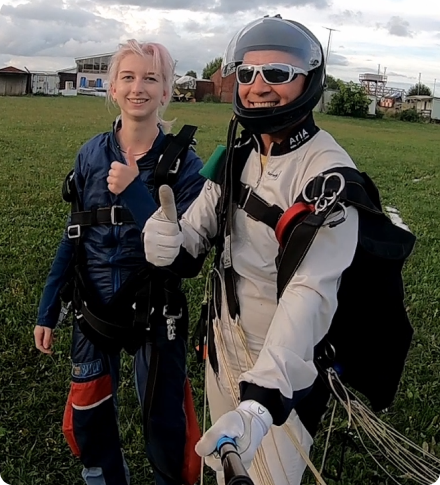

Добро пожаловать в компанию SkyLife! Мы являемся одними из лидеров
в индустрии экстремальных видов спорта и предлагаем самые безопасные и захватывающие прыжки с парашютом в Ленинградской области.
Наша команда состоит из высококвалифицированных и опытных инструкторов, которые пройдут с вами все этапы подготовки и помогут вам испытать незабываемые эмоции от свободного падения.
Мы предлагаем различные программы прыжков, исходя из вашего опыта
и желаемого уровня адреналина.
Если вы хотите испытать незабываемые эмоции, наша команда готова помочь вам в этом! Свяжитесь с нами, чтобы узнать больше о наших услугах и забронировать свой прыжок с парашютом уже сегодня!
